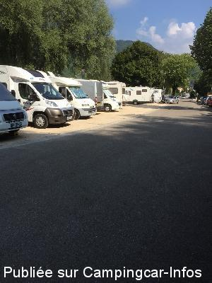
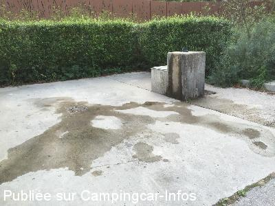
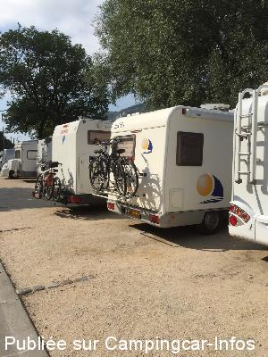
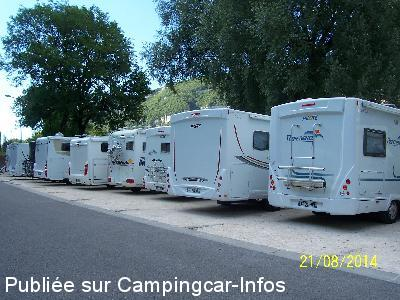
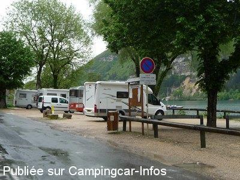
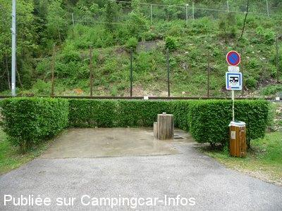

ASN = Aire de services avec stationnement nuit possible de :
NANTUA
(N° 308)
Accès/adresse :
Route du Port
01130 NANTUA
01130 NANTUA
Latitude : (Nord) 46.15489° Décimaux ou 46° 9′ 17′′
Longitude : (Est) 5.59665° Décimaux ou 5° 35′ 47′′
Tarif : 2015
Stationnement : 7,50 €
Services gratuits
Passage de la police municipale pour encaissement
Type de borne : Artisanale
Services :


Poubelles
Autres informations :
13 emplacements, sur terre battue, éclairés, ombragés, au bord du lac
Tél Office du Tourisme : + 33(0)474 750 005
http://www.nantua.fr/

Le 11/08/2015 par Snoopy

Le 11/08/2015 par Snoopy

Le 11/08/2015 par Snoopy

Le 07/11/2014 par PAUL

Le 15/05/2010 par Xtian74

Le 15/05/2010 par Xtian74
de
Roland 61
le 25/07/2015 :
Aire près du lac sur 13 places numérotées, séparées par quelques pavés. Beaucoup trop étroites juste la place à ouvrir la porte. Manque de longueur pour les + de 7 m. Stationné quelques heures en matinée car passage important sur cette petite route, de piétons et véhicules de jeunes faisant du rodéo ce jour.
Aire près du lac sur 13 places numérotées, séparées par quelques pavés. Beaucoup trop étroites juste la place à ouvrir la porte. Manque de longueur pour les + de 7 m. Stationné quelques heures en matinée car passage important sur cette petite route, de piétons et véhicules de jeunes faisant du rodéo ce jour.
de
Mary
le 30/05/2015 :
Très belle aire malgré un prix un peu élevé.
En bordure du lac. Magasin lidl à proximité.
Aire de jeux pour les enfants et balade autour du lac.
Peu de gêne par rapport à la ligne du TGV, premier train vers 7h et dernier vers 20h, passage à faible allure donc peu de bruit.
Très belle aire malgré un prix un peu élevé.
En bordure du lac. Magasin lidl à proximité.
Aire de jeux pour les enfants et balade autour du lac.
Peu de gêne par rapport à la ligne du TGV, premier train vers 7h et dernier vers 20h, passage à faible allure donc peu de bruit.
de
franck et valérie
le 24/08/2012 :
belle aire située en bordure du lac avec plage aménagé tout à coté, cadre agréable. Dommage que la nuit soit trop bruyante par le passage de voiture à très vive allure et non pas par le TGV qui ne passe pas de 22h à 7h environ.
belle aire située en bordure du lac avec plage aménagé tout à coté, cadre agréable. Dommage que la nuit soit trop bruyante par le passage de voiture à très vive allure et non pas par le TGV qui ne passe pas de 22h à 7h environ.
de
Bernard
le 05/08/2012 :
Bonjour à tous.
Aire située entre le lac et sa route et la voie ferrée. A notre arrivée il n'y avait plus d'emplacement. Nous nous sommes installés en face du lac, sur le grand parking, route de La Cluse. Passage de la police municipale pour encaissement, (tarif de l'aire de service) qui nous précise l'endroit des services si nécessaire.
Bonjour à tous.
Aire située entre le lac et sa route et la voie ferrée. A notre arrivée il n'y avait plus d'emplacement. Nous nous sommes installés en face du lac, sur le grand parking, route de La Cluse. Passage de la police municipale pour encaissement, (tarif de l'aire de service) qui nous précise l'endroit des services si nécessaire.
de
domi et patoche
le 21/04/2012 :
§
bonjour de retour des alpes sommes arreter a nantua pour dormir , la halte coute 7 euros maintenant , avons passer notre chemin , trop cher et en plus a cote de la ligne sncf tout pres , merci pour le bruit
§
bonjour de retour des alpes sommes arreter a nantua pour dormir , la halte coute 7 euros maintenant , avons passer notre chemin , trop cher et en plus a cote de la ligne sncf tout pres , merci pour le bruit
de
Martine
le 29/08/2011 :
Bonjour, nous avons stationné en face de cette aire qui était remplie lors de notre passage. Stationnement pour la nuit toléré ; un receveur passe le matin et c'est le même prix qu'en face et vous pouvez utiliser les services. Calme malgré la proximité de la grande route. Nous y retournerons.
Bonjour, nous avons stationné en face de cette aire qui était remplie lors de notre passage. Stationnement pour la nuit toléré ; un receveur passe le matin et c'est le même prix qu'en face et vous pouvez utiliser les services. Calme malgré la proximité de la grande route. Nous y retournerons.
de
criscool
le 31/07/2011 :
belle aire au bord du lac;pas de place,camping a cotè tres agreable.
belle aire au bord du lac;pas de place,camping a cotè tres agreable.
de
Alain et Gilles
le 16/04/2011 :
Aire très prisée au bord du lac (arrivée vers midi pour avoir une place) ; commerces à proximité ; quelques TGV en journée et à 17h vous serez à l'ombre du relief montagneux... Pour pècher dans le lac du bord : peu de renseignements lors de notre passage. La région est magnifique
Aire très prisée au bord du lac (arrivée vers midi pour avoir une place) ; commerces à proximité ; quelques TGV en journée et à 17h vous serez à l'ombre du relief montagneux... Pour pècher dans le lac du bord : peu de renseignements lors de notre passage. La région est magnifique
de
Nigel & Dee
le 22/01/2011 :
nice place to stop, lovely view over the lake, a little train noise, tracks only 50mts away. 10 minuits walk into town, good selection of shops. Lidl supermarket only 150mts away. 08/01/2011
nice place to stop, lovely view over the lake, a little train noise, tracks only 50mts away. 10 minuits walk into town, good selection of shops. Lidl supermarket only 150mts away. 08/01/2011
de
devonia
le 03/10/2010 :
Aire très agréable au bord du lac. Fin septembre, nombreux CCars sur le parking et le long de la ligne SNCF. Merci à la municipalité
Aire très agréable au bord du lac. Fin septembre, nombreux CCars sur le parking et le long de la ligne SNCF. Merci à la municipalité
de
gilou17
le 24/01/2010 :
Nous avons passé une nuit calme à 2 CC, en bordure du lac. Rien à redire à part merci à la commune.
Nous avons passé une nuit calme à 2 CC, en bordure du lac. Rien à redire à part merci à la commune.
de
Paul
le 22/07/2009 :
Aire très agréable, en bordure du lac mais surpeuplée. Un policier a eu la gentillesse de nous faire garer au bord de la voie de chemin de fer. Le TGV va prochainement circuler à quelques mètres.
Aire très agréable, en bordure du lac mais surpeuplée. Un policier a eu la gentillesse de nous faire garer au bord de la voie de chemin de fer. Le TGV va prochainement circuler à quelques mètres.
de
Wallet Daniel
le 13/01/2007 :
Bjr. Aire très agréable devant le lac loin de la R.N, au calme. Merci à la commune pour votre accueil.
Bjr. Aire très agréable devant le lac loin de la R.N, au calme. Merci à la commune pour votre accueil.